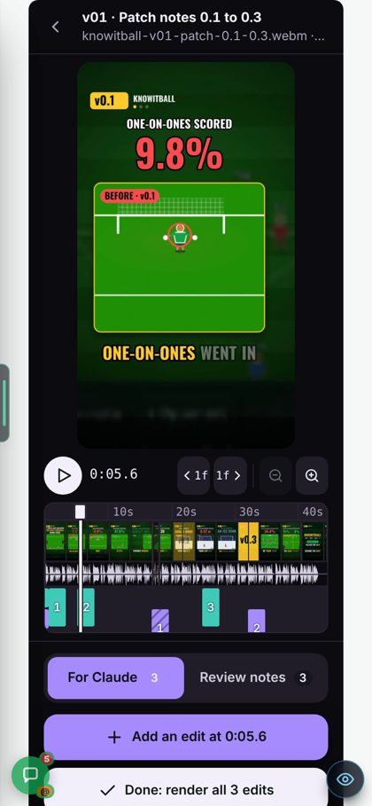
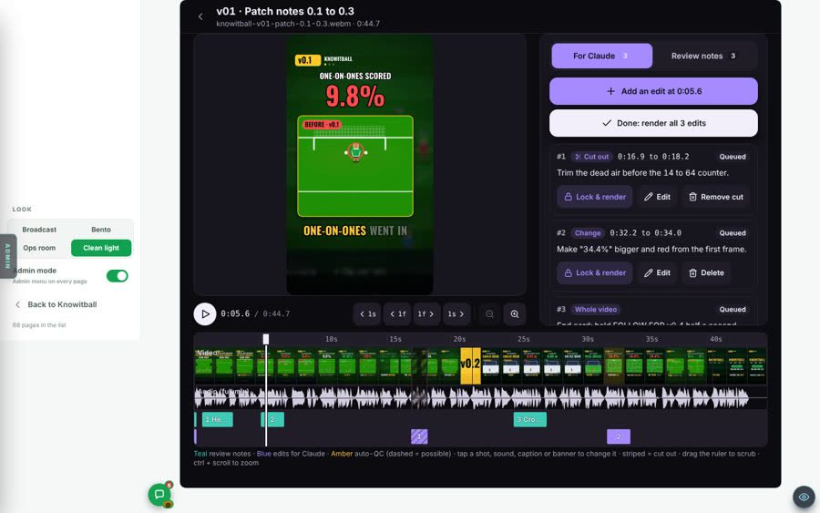
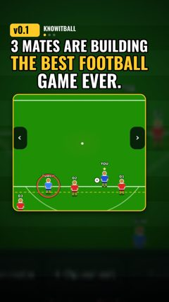

Plan only. Nothing here is built. (The guest account and ad pages from 0.110h now exist on the site, switched off.)
What the Marketing tab has today, what was half-built, and the plan for Mikey: paste a TikTok link, and Claude logs it, breaks it down, writes our version and builds the video. Fits the Team room plan: #marketing is the chat, the Marketing tab is the workshop.
The short version
1. The workshop exists. Board, Client, Studio (the editing suite) and Uploads are built and merged. Calendar, Scripts, Statics and a card page are not.
2. The missing piece is the start button. Today nothing happens when a link arrives. Someone must open a Claude chat. The plan adds a paste box, a card page, and a Claude that checks for new links on its own.
3. Two places, one card. A link in #marketing or in the tab's paste box makes the same card. Each card's updates post into one thread in #marketing.
4. First useful slice is small. Paste a link, get a card with its picture in seconds. Breakdown within the hour comes in slice 3.
Every fact carries a tag: seen read in our code or looked at in a picture · measured counted or run by me today · reasoned my design call or a guess. Nothing here was built or changed.
4 of 7Marketing views built (Board, Client, Studio, Uploads) seen
6,247lines of Marketing + Studio code measured
1video on the board: v01, posted measured
0links that start work on their own today seen
1 · What's there today: built, half-built, broken
2 · The link-to-video flow: step by step, who runs each step, costs
3 · Marketing tab ↔ #marketing: the board, the card page, the bot posts
4 · Studio build slices: smallest useful first
5 · Your calls
1 · What's there today
Read on branch Harry, 25 Oct. Slice 1 merged 21 Oct, slice 2 merged 22 Oct (commit dbbec934). I did not open the live site.
Built and working
The Marketing tab, admins only seen
Four views: Board · Client · Studio · Uploads. "Soon: Calendar · Scripts" shows as grey text. Every page has the eye guide.
The board: 7 columns, 1 card seenmeasured
Idea → Script → Script OK → Making → In edit → Final check → Posted. Cards live in marketing/board.json. The site reads it from GitHub on 4 branches (main, Harry, Mikey, Leo) every 60 s. Only Claude moves cards, by pushing. The one card is v01 (patch notes 0.1 to 0.3, 44.7 s, posted 21 Oct).
Uploads straight to private storage (Cloudflare R2) seen
The phone sends the file straight to R2 with a 15-minute link. Caps: 500 MB a file, 30 files and 5 GB a day. The Videos recorder has "Send to Marketing".
The Studio: the full editing suite seen
One cut on a timeline. Two tabs: For Claude (edits: cut out, change at 0:07, whole video) and Review notes (fix, keep, check). Lock & render, Done: render all, an auto-check lane, tap a lane to change it, a mic on every box. Notes save next to the video in R2, never in the code.
6 skills, 3 helper scripts measured
Skills: video-board, patch-note-video, tiktok-remix, review-timeline, suite-inbox, screen-video (538 lines). Scripts: studio-prep.py (filmstrip, sound wave, shots), suite-notes.mts (read and answer the suite), private-names-guard.mjs (stops other businesses' names going into this public repo).
Both Marketing test suites pass measured
adminMarketing and marketingStorage, run today: all passed.

Phone: the suite with v01 loaded.

Computer: video left, edits right, timeline below. Stills from 22 Oct, made on a dev server with made-up notes seen.
Planned, not built (the "mid-build")
Calendar (plan piece 3) seen
Month view and a 14-day strip of post dates and patch-note days. Not started.
Scripts page (piece 6) seen
Write, grade and keep versions of a script. Not started. The scripts live as files today.
Move a card by hand (piece 2) seen
The plan said Harry can move a card like a to-do tick. The board has filters and "Check now", no move buttons.
A page per card seen
A card shows a title, a line and a log. Its script and cover open as files on GitHub.
Filmstrip made on upload (piece 5) seen
The plan said upload makes a filmstrip and a small copy. Today a Claude chat runs studio-prep.py by hand per cut.
Statics (picture posts) seen
A placeholder. You said to wait.
6 more skills to port (piece 7) seen
scriptwriting, creative-research, editor-feedback, batch-planner, brief-artifact, mashup-build. Method only, nothing from other clients.
The video library seen
"Every video, tap to watch, from R2" (commit f17ef9f4) sits on an agent branch only, not on Harry.
Broken or weak
1. Uploads and Studio use an old copy of the board bugseen
Both pages read the board built into the site, not the live one. A card Claude pushes shows on the Board in about 1 minute, but is missing from the Uploads card list until the next deploy.
2. The site cannot wake Claude gapseen
Done and Lock & render are saved and wait. Nothing happens until someone opens a chat and runs suite-inbox.
3. Uploads do not resume gapseen
One upload in one go. A dropped phone signal on a 300 MB file starts again from zero. The plan listed this as risk 8.
4. The TikTok remix has never run measured
The tiktok-remix skill is a draft (39 lines). No card other than v01 exists.
5. R2 on the live site: not seen
The code is ready for it. The 22 Oct stills say "Storage not connected" because they were made locally. I could not check the live site.
2 · The link-to-video flow
Mikey pastes a TikTok, Reels or Shorts link. Here is every step from paste to a cut in the Studio. Blue = the site. Violet = a Claude session in the cloud. Amber = a person.
F1What Mikey sees, step by step (phone)
Drawn mock-ups at phone size. Names and numbers are examples; 9.8% → 47.6% is v01's real line from patch note 0.1.
1 · Paste0 s. In #marketing, or the tab's paste box.
14:02●●●
☰# marketing
M
Mikey
tiktok.com/@somecreator/video/74… do this for us
Message #marketing➤
2 · LoggedAbout 2 s. The site, no Claude yet.
14:02●●●
☰# marketing
📣
Marketing bot BOT
New card · v04 · Idea
▶
"When your keeper finally…" @somecreator · TikTok
Claude looks at it by 15:00.
Open cardStart now
3 · BreakdownUp to 1 hour, then about 10 min of work.
14:51●●●
☰Thread · v04
📣
Marketing bot BOT
Their format · 27 s
Hook
0–2 s: text "POV:" + a fail
Beats
6 beats, about 4 s each
Cuts
1.4 a second
Sound
song, no voice
End
loops to the start
3 ways to make it ours
A · Keeper 9.8% → 47.6% B · Goalie Mode C · Ballon d'Or night
Pick ABCNone
4 · Script OKMikey reads and says yes.
15:20●●●
☰Thread · v04
📣
Marketing bot BOT
Script v1 · A · 26 s
0:00
POV: your keeper in v0.1
0:02
"Nine point eight percent."
0:06
…5 more beats
OK, build itChange…Full script
M
Mikey
OK, build it
5 · BuiltAbout 20–40 min in the cloud (guess).
16:01●●●
☰Thread · v04
📣
Marketing bot BOT
Building v04
Voice done · frames 1,350 of 1,350 · sound
Ready to review · In edit
▶
v04 · cut 1 · 26.4 s In the Studio, with its filmstrip
Open in StudioOpen card
Step 2 shows "by 15:00" because Claude checks once an hour (your call 2). With the faster wake it reads "in about a minute". reasoned
F2Who runs each step, and what works today
Step
Runs where
Automatic today?
Cost
1. Paste a link
Site: #marketing (needs the Team room channels) or the Marketing tab's paste box
not built
free
2. Card at Idea, with picture and title
Site. TikTok and YouTube give a picture, a title and the creator's name to anyone who asks reasoned, from memory, not tested. Instagram asks for a Facebook key.
not built
free
3. Wake Claude
Option A: a scheduled task starts a fresh cloud Claude session every hour; it checks for new links. Option B: a GitHub job starts Claude within about a minute. Option C: Mikey opens a chat.
C works today A and B need building
A: inside the Claude plan. B: see below.
4. Download and watch it
Claude session: screen-video fetch + breakdown (frames + transcript)
works in a chat
free tools
5. Format table + 3 ways to make it ours
Claude session: tiktok-remix steps 3 to 5. Writes them to the card and posts in the thread.
steps work; posting back not built
Claude usage
6. Pick one; OK the script
Mikey: a tap in the thread or on the card. The skills say a person picks the premise.
buttons not built
—
7. Build: voice, frames, sound, render
Claude session: Kokoro voice, a browser draws each frame, ffmpeg joins them. v01 was made this way in a cloud session. Game footage: the star sandbox on a dev server.
works in a chat
free tools
8. Upload + filmstrip into the Studio
Claude session with the R2 settings in its environment
works if the settings are there not seen
R2: pennies
9. Review, notes, Done
Mikey in the Studio
built
—
10. Apply the edits
Claude session: suite-inbox. Same wake as step 3.
only when a chat opens
Claude usage
11. Post on TikTok
Mikey, by hand
stays manual (your call 5)
—
12. Views and learnings
Mikey pastes the post link; Claude reads views when it can and writes a Brain note
not built
free
Does anything need a computer?
No, for the normal path. Every Claude step runs in a cloud session, and Mikey works from his phone. reasoned
One likely exception: TikTok often blocks downloads from cloud servers reasoned, not tested. Then the bot asks Mikey to save the video on his phone and drop it in the paste box. It goes to R2, and Claude takes it from there.
The wake options, with costs (all reasoned, nothing tested)
A · Scheduled task, hourly. A Claude scheduled task can start a fresh cloud session on a timer. The shortest gap is normally 1 hour. Each run reads new links, does the breakdowns, posts back, and stops. It runs on the account's Claude plan, so no extra money; it uses that account's usage. A run with nothing new ends in seconds. Wait: up to 60 minutes.
B · GitHub job on demand. The site asks GitHub to start a job; the job runs Claude Code. Start: about 1 minute. Cost: GitHub job minutes are free on a public repo (from memory). Claude: either a plan sign-in token (counts against the plan) or a paid API key. With an API key, one breakdown is a guess of £1 to £5 (many frames are read as pictures). Risk: job logs on a public repo are public. The breakdown and our unreleased scripts could show there. So B needs a private repo for the job, or logs kept short.
C · Open a chat. Works today. Mikey types "go through the marketing inbox". Free, but it is not "automatic".
Suggested: start with A. Add B only if an hour's wait annoys Mikey. A's session needs four things in its cloud environment: GitHub push, the R2 settings, a key to write cards, and the bot's posting key. Keys go in the environment settings, never in chat or code.
3 · Marketing tab ↔ #marketing
The rule
#marketing is the front door. Talk, paste links, answer the bot.
The Marketing tab is the workshop. The board, each card's page, the Studio, uploads, later the calendar and library.
One card = one thread. Every card has one thread in #marketing. The card page links to it; the thread links back.
One card, one thread. Nothing is copied twice: the card holds the facts, the thread holds the talk. reasoned
What posts where (so #marketing stays readable)
Event
In the channel
In the card's thread
A new link → new card
Yes: one post with the picture
Starts the thread
Breakdown ready; 3 ways to pick
Yes, it needs Mikey
The full table
Script ready for OK
Yes, it needs Mikey
The script
Build progress
No
One post, its bar updates in place
Cut ready in the Studio
Yes
Link to the Studio
Card moved by hand
No
One line
Same link pasted twice
Bot replies "Already v04" with the card
—
Rule of thumb: the channel only hears about things that need a person. reasoned
M1#marketing on a computer, with the card's thread open
Same look as the Team room plan (U0). Example messages. Swipe sideways inside the box on a phone, or tap it to enlarge.
⌂Team room
▾ Channels
#general
#ideas
#bugs
#patch-notes
#marketing
#connectors
▾ Bots
CClaudeBOT
📣Marketing botBOT
▾ Marketing
▦Board ↗
▶Studio ↗
# marketingPaste a TikTok, Reels or Shorts link and the bot starts a video▦
MessagesCards 4Files
Today
M
Mikey
tiktok.com/@somecreator/video/74… do this for us
📣
Marketing bot BOT
New card · v04 · Idea
▶
"When your keeper finally…" @somecreator · TikTok · 27 s Claude looks at it by 15:00.
Open cardStart now
📣M 5 replies Last reply 16:01
📣
Marketing bot BOT
v04: breakdown ready. 3 ways to make it ours. @Mikey pick one in the thread.
H
Harry
A is the strongest. The 9.8% number does the work.
Message #marketing, or paste a link＋➤
Thread · v04card: In edit✕
📣
Marketing bot BOT
Their format: hook 0–2 s, 6 beats, 1.4 cuts a second, song, loops. A · Keeper 9.8% → 47.6% · B · Goalie Mode · C · Ballon d'Or night.
M
Mikey
A
📣
Marketing bot BOT
Script v1 for A, 26 s. OK, build it · Change…
M
Mikey
OK, build it
📣
Marketing bot BOT
Cut 1 is in the Studio. Open in Studio
Reply · goes on the card too➤
M2The board, with the paste box (computer)
Today's board plus three things: the paste box, live cards from #marketing, and status chips. v01 is real; v02 to v05 are made-up examples.
Marketing
BoardStudioUploadsClientCalendarLibrary
↻ Check now
Paste a TikTok, Reels or Shorts link, or type an idea…Add to boardPosts in #marketing for you, so the talk stays in one place.
Idea 2
v04 · From TikTok@somecreator · 27 s · MikeyClaude by 15:00
v05 · Ballon d'Or night revealTyped idea · Harry
Script 1
v03 · POV: your keeperFrom TikTok · MikeyPick 1 of 3 · Mikey
Script OK 0
Nothing here
Making 1
v02 · Goalie ModePatch note 0.2 · Claude
Frames 540 of 1,350
In edit 0
Nothing here
Final check 0
Nothing here
Posted 1

v01 · Patch notes 0.1 to 0.344.7 s · out 21 OctNo views logged yet
M3The board and a card page on a phone
14:03●●●
‹Marketing · Board↻
Paste a link or an idea…Add
All 5Idea 2Script 1Making 1Posted 1
v04 · From TikTokIdea · Claude by 15:00
v05 · Ballon d'Or nightIdea · typed by Harry
v03 · POV: your keeperScript · pick 1 of 3 · you
v02 · Goalie ModeMaking · frames 40%
v01 · Patch notes 0.1–0.3Posted 21 Oct
14:52●●●
‹v03 · POV: your keeper⋯
ReferenceBreakdownScriptCutsLog
IdeaScriptOKMakingEditCheckPosted
Their format · 27 s
0–2 s
Hook: "POV:" text, a fail
SEEN
Beats
6, about 4 s each
SEEN
Sound
trending song
GUESSED
A · Keeper 9.8% → 47.6%Patch 0.1. Real footage exists.
Pick
B · Goalie ModePatch 0.2. No stills: drawn, ILLUSTRATION.
Pick
Thread in #marketingMove ▾
M4A card's page on a computer
New page: /admin/marketing/card/v03. Everything about one video in one place. Example content.
‹ Board
v03 · POV: your keeper in v0.1
Idea ✓ScriptScript OKMakingIn editFinal checkPosted
Move to ▾Owner: MikeyPost on: 31 OctThread in #marketing ↗Script file ↗
Reference pasted by Mikey 14:02
▶
Link
tiktok.com/@somecreator/video/74…
Creator
@somecreator
Length
27 s
Views
1.2M (read when Claude downloaded it)
Likes
140k
File
kept in the session only, never in the repo
Their format tiktok-remix step 3
Hook 0–2 s
White text "POV:" top third; a keeper lets in a soft goal
SEEN
Beats
6 beats, 3.5 to 5 s each; each one a bigger fail
SEEN
Cuts
1.4 a second
SEEN
Captions
Centre, bold, 2 words at a time
SEEN
Sound
A song; no voice
GUESSED
End
Cuts back to frame 1, so it loops
SEEN
3 ways to make it ours a person picks
A · Keeper 9.8% → 47.6%Same "POV" fail beats, then the fix. Patch 0.1. Real footage.
Pick
B · Goalie ModeYou are the keeper now. Patch 0.2. Drawn, ILLUSTRATION.
Pick
C · Ballon d'Or nightBuilds up to the trophy. Needs a capture.
Pick
Script appears after a pick
Time · voice · on screen · source line, in v01's shape. Buttons: OK, build it · Change…
Cuts in the Studio
None yet. Each render is listed here and opens in the Studio.
What happened
Mikey pasted the link. Card made at Idea.
Claude downloaded it (27 s, 1.2M views).
Breakdown and 3 ways posted. Card to Script.
Note for Claude… (also posts in the thread)
4 · Studio build slices
Smallest useful first. S = one sitting · M = about a day · L = several days reasoned guesses. Slices 1 to 5 do not wait for the Team room. Slice 6 uses its channels.
1Paste box, card page, live cards everywhere M
A paste box on the board. A link makes a card at Idea in seconds, with the video's picture and title. A page per card. Uploads and Studio read the live cards (fixes bug 1).
Mikey can: paste a link from his phone and see it on the board straight away. Open any card and see everything about it. Upload a cut to a brand-new card.
2Run the board by hand S
Move a card, set the owner and the post date, leave a note. Each change is saved and logged.
Mikey can: manage every video himself, with or without Claude.
3Claude picks up new links: the breakdown M
An hourly scheduled task (call 2). It downloads each new link, fills the format table and frames on the card, and offers 3 ways with Pick buttons. If the download is blocked, the card asks for the file.
Mikey can: paste a link and, within the hour, read the breakdown and pick one, without opening a chat.
4Script OK → the video builds itself L
After a pick, Claude writes the script on the card. "OK, build it" starts the build on the next run: voice, frames, sound, render, upload, filmstrip. A progress bar on the card. Saves the render scripts in the repo (v01's were lost with its session).
Mikey can: go from a link to a cut in the Studio with three taps: Pick, OK, Open.
5Done in the Studio wakes Claude M
The same hourly run also works through the Studio's Done and Lock presses (suite-inbox). Filmstrip made on every upload. Uploads resume after a dropped signal.
Mikey can: leave edits, press Done, and get the new render back on its own.
6#marketing and the Marketing bot M
Needs the Team room channels. A link in #marketing makes a card. Each card gets one thread. The bot posts the steps that need a person, with buttons. Thread replies become card notes.
Mikey can: do everything from the chat on his phone, and only open the tab to review cuts.
7Calendar M
Month view and a 14-day strip: post dates and patch-note days.
Mikey can: plan what goes out when, and see gaps.
8Library and learnings M
Every posted video with its post links and numbers (pasted, or read when possible). What each one taught us becomes a Brain note (client-kib). Brings the video library over from its agent branch.
Mikey can: see what worked, and Claude writes the next script from it.
9Statics L
Picture posts: covers, thumbnails, single-image posts, steered one version at a time.
Waiting: you said to wait on it.
What each slice needs from a person
Slice 1: your call 1 (where cards live). If a database table: run one SQL page.
Slice 3: your call 2 (how Claude wakes) and 3 (whose account). Add the GitHub, R2 and card-writing keys to that account's cloud environment.
Slice 4: nothing new by default: every picture is real game footage or marked ILLUSTRATION (RUL-KIB-002). Higgsfield only if you say so (call 6).
Slice 6: the Team room's channels built first (Team room plan).
Added (Harry, 25 Oct)Guest accounts and ad landing pages belong here, in the Marketing studio. They are on the site now, switched off. Their switch-on list lives here: (1) Cloudflare Turnstile human check for knowitball.co.uk, public key in Vercel, push live; (2) only then the secret key in Supabase bot protection; (3) run the guest SQL, allow guest sign-ins and account linking, timed jobs on; (4) the Vercel switch on. Each ad (e.g. League Two to the Ballon d'Or) is a campaign made here.
5 · Your calls
1. Where do cards live?
PickA database table (Supabase). The site must write cards: a paste, a hand move, a note. Today only a Claude push can change a card, which takes about a minute and needs git. Claude would write to the table too. Other way: keep board.json and only add "waiting links" from #marketing on top. This undoes the "just use pushes" way (RUL-TEAM-007) for this one board, so it is your call. reasoned
2. How does Claude wake up?
PickA · An hourly scheduled task first. No extra money; waits up to an hour. Add B (a GitHub job, about 1 minute) only if the wait annoys Mikey, and only with a private place for its logs. reasoned
3. Whose Claude account runs it?
PickMikey's, since marketing is his. Its usage comes off his plan. The keys go in his cloud environment. reasoned
4. How far does Claude go without asking?
PickStop after the 3 ways. A person picks the premise and OKs the script (the skills already say so). Rendering then runs without asking. seen in video-board step 2
5. Posting to TikTok
PickStays by hand. Mikey posts and pastes the post link on the card. Auto-posting can come later. reasoned
6. Higgsfield for marketing videos
Your callThe old rule (RUL-3D-002, 21 Oct) says no Higgsfield for builders. On 25 Oct you said Higgsfield is not parked, it's on/off around credits. Recommended: allowed for marketing with a credit cap per video (e.g. 20 credits), shown on the card. reasoned
7. Fix bug 1 now?
PickYes, inside slice 1. Uploads and Studio read the live cards. Small. seen
What this page could not check
The live site: whether R2 is connected there, and whether the board reads GitHub there. I read the code only.
Whether TikTok, Reels and Shorts download from a cloud session. Not tested.
What TikTok's free "embed" answer gives (picture, title, creator): from memory. Views and likes: only from the download, also not tested.
Scheduled-task limits (1 hour shortest gap) are from the tool's own description today. Cost per breakdown with an API key is a guess.
Build times (10 min breakdown, 20–40 min render) are guesses. v01's real render time was not recorded.
The Team room's channels are a plan, not built. #marketing does not exist yet.